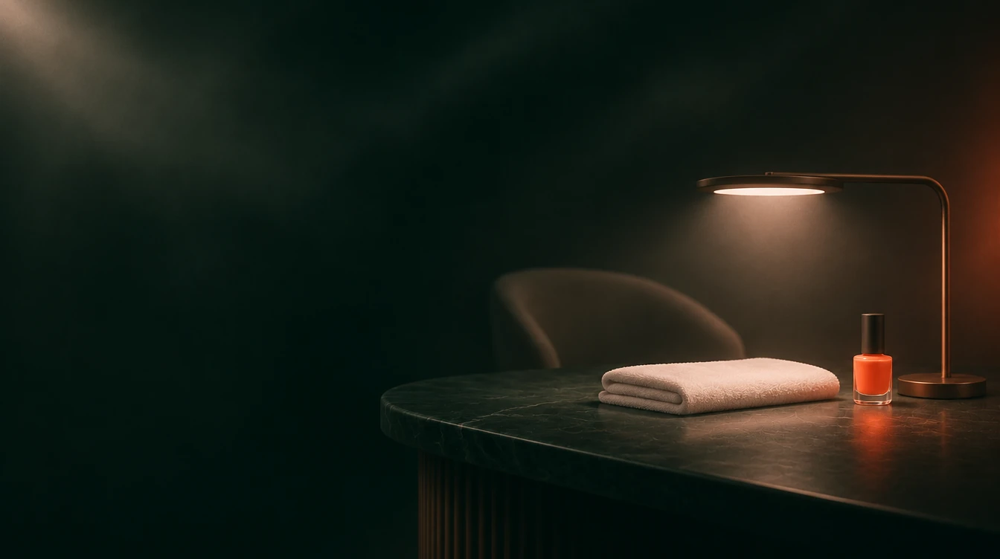
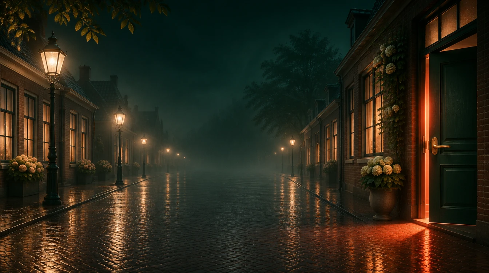

aandacht tot in de nagelriem.
Een nagelstudio in Waalwijk voor acryl, BIAB en pedicure. Een plek waar je even stilzit en alleen je handen of voeten aan de beurt zijn.
klein werk, groot verschil.
Nagels zijn precisiewerk. Een millimeter te veel gevijld, een laag die net niet egaal ligt — je ziet het niet altijd meteen, maar je voelt het later wel. Daarom draait een goede behandeling om geduld: kijken, vormen, opbouwen en afwerken, in die volgorde en zonder stappen over te slaan.
Tegelijk is een afspraak ook gewoon een moment voor jezelf. Je telefoon even weg, je handen op tafel en iemand die aandacht heeft voor wat jij mooi vindt. Dat mag rustig gaan.
van boeking tot glans.
- BoekenKies je behandeling en tijd online via Fresha.
- WelkomJe vertelt wat je wilt; samen kijk je naar je nagels.
- VormVijlen en voorbereiden, rustig en precies.
- LaagBIAB of acryl, opgebouwd tot een sterke basis.
- KleurEen tint die bij jou en het moment past.
- AfEen laatste glanslaag en je bent klaar om te gaan.
hier komt het echte werk.
Op deze plek komen foto's van sets en van de studio zelf. Tot die tijd zie je het werk op Instagram.
Bekijk @df.salonbeauty
tot zo in de studio.
Kies je behandeling en een moment dat jou past — online, wanneer het jou uitkomt.